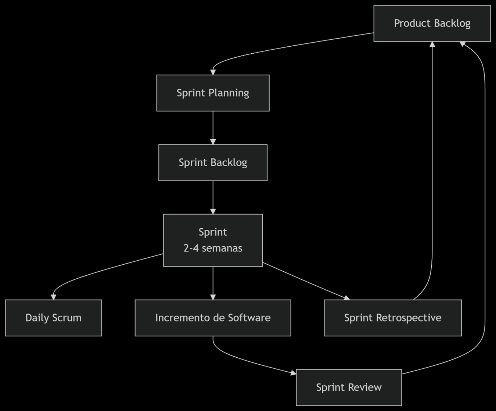

Sección 1. Introducción sobre metodologías ágiles y arquitecturas aplicables al desarrollo de aplicaciones móviles
1. Investigación y Justificación de Metodologías Ágiles en Desarrollo Móvil
El desarrollo móvil se caracteriza por ciclos de vida cortos, mercados altamente competitivos y requisitos que cambian con frecuencia. Las metodologías ágiles son cruciales aquí porque se adaptan a la incertidumbre y fomentan la entrega incremental de valor, permitiendo obtener retroalimentación temprana del usuario y ajustar el producto rápidamente.
Comparativa de Metodologías
Scrumban
¿Qué es? Una fusión híbrida de Scrum y Kanban. Toma la estructura de roles y eventos de Scrum y la visualización del flujo de trabajo y los límites de trabajo en curso (WIP) de Kanban.
Ventajas para móvil: Es ideal para equipos que necesitan la estructura de Scrum pero con la flexibilidad de Kanban para manejar tareas de mantenimiento o requerimientos imprevistos que son comunes en el desarrollo y operación (DevOps) de apps. Previene la sobrecarga del equipo al limitar las tareas en progreso.
Extreme Programming (XP)
¿Qué es? Una metodología ágil que se centra en la calidad técnica del software y la responsividad ante cambios de requisitos. Sus prácticas clave incluyen Programación en Pareja, Desarrollo Guiado por Pruebas (TDD), Integración Continua (CI) e Iteraciones Cortas.
Ventajas para móvil: La alta calidad de código y las pruebas automatizadas son esenciales para las apps móviles, que se ejecutan en múltiples dispositivos y versiones de OS. XP reduce drásticamente los bugs y facilita la incorporación de cambios, algo constante en el desarrollo móvil.
Mobile-D
¿Qué es? Una metodología ágil diseñada específicamente para el desarrollo de software móvil. Estructura el proyecto en cinco fases: Exploración, Inicialización, Producción, Estabilización y Pruebas.
Ventajas para móvil: Aborda desafíos específicos como la gran diversidad de dispositivos, las limitaciones de hardware (memoria, batería), la intermitencia de las redes y la integración con sensores. Enfoca esfuerzos en la estabilización y pruebas rigurosas, asegurando que la app funcione de manera confiable en condiciones del mundo real.
Justificación
Para un proyecto móvil típico, Scrum es una excelente opción inicial por su simplicidad y estructura. Sin embargo, si la prioridad es la calidad técnica y la adaptabilidad extrema, XP es superior. Si el proyecto es muy complejo y específico para móviles con grandes desafíos de hardware y testing, Mobile-D ofrece un marco especializado. La elección final depende de la naturaleza del proyecto, el equipo y los riesgos identificados.
Sección 2. Seleccionar una metodología ágil para el proceso de desarrollo Móvil
(Metodología Seleccionada: Scrum)
4. Características Principales de Scrum
Roles Definidos:
- Product Owner: Representa al cliente/stakeholders, gestiona el Backlog y maximiza el valor del producto.
- Scrum Master: Facilita el proceso, elimina impedimentos y asegura que el equipo siga los principios de Scrum.
- Equipo de Desarrollo: Grupo multifuncional y autoorganizado que realiza el trabajo de entregar el incremento de software.
Eventos (Ceremonias) Time-boxed:
- Sprint: Iteración de tiempo fijo (normalmente 2-4 semanas) donde se crea un incremento de producto potencialmente entregable.
- Sprint Planning: Planificación del trabajo a realizar en el Sprint.
- Daily Scrum: Reunión diaria de 15 minutos para sincronizar actividades.
- Sprint Review: Inspección del incremento y adaptación del Product Backlog.
- Sprint Retrospective: Reflexión del equipo sobre cómo mejorar su proceso.
Artefactos:
- Product Backlog: Lista priorizada de todo lo que se necesita en el producto.
- Sprint Backlog: Conjunto de elementos del Product Backlog seleccionados para el Sprint.
- Incremento: Suma de todos los elementos del Product Backlog completados durante un Sprint.
5. Cuándo es Recomendable Utilizar Scrum
Scrum es recomendable cuando:
- Los requisitos del proyecto cambian o evolucionan rápidamente.
- El problema a resolver es complejo y no se conoce la solución completa de antemano.
- Se necesita entregar valor al cliente de forma temprana y continua.
- Se cuenta con un equipo comprometido, multifuncional y capaz de auto-organizarse.
- El cliente o stakeholder desea estar involucrado y proporcionar feedback frecuente.
Gráfico SCRUM:

SECCIÓN 3: PLAN DE DESARROLLO DE PROYECTO MÓVIL
1. Nombre del Proyecto
CocinaFácil
Tu recetario inteligente
2. Visión del Proyecto
Desarrollar una aplicación móvil intuitiva que resuelva el dilema diario de "¿qué cocino?" al permitir a los usuarios ingresar los ingredientes que tienen disponibles y recibir sugerencias de recetas precisas y personalizables. La app busca reducir el desperdicio de comida, ahorrar dinero y tiempo, y hacer de la cocina una experiencia más accesible y divertida.
3. Integrantes de Equipo
- Miguel Angel Anastasio Nava - Product Owner / DiseñadorUX/UI
- Miguel Angel Anastasio Nava - Desarrollador Backend
- Filiberto Navarro Grifaldo - Desarrollador Flutter / Tester
4. Tareas Críticas de Inicio de Proyecto
Tareas Pre-Sprint (Semana 0)
🔧 Configuración Técnica
- Instalar y configurar Flutter SDK
- Configurar IDE (VS Code/Android Studio)
- Crear repositorio Git en GitHub
- Configurar estructura de ramas (main, develop)
- Crear proyecto Flutter base
- Configurar dependencias iniciales
📋 Planificación
- Definir historias de usuario detalladas
- Crear backlog de producto priorizado
- Establecer Definition of Done
- Planificar Sprint 1 (tareas y estimaciones)
- Configurar herramientas de seguimiento
- Definir calendario de ceremonias Scrum
🎨 Diseño y UX
- Crear wireframes de pantallas principales
- Diseñar mockups de alta fidelidad
- Definir paleta de colores y tipografías
- Establecer guía de estilo visual
- Validar flujo de usuario principal
- Crear prototipos interactivos
📊 Investigación
- Investigar y recopilar 50 recetas iniciales
- Definir estructura de datos de recetas
- Crear archivo JSON con recetas base
- Investigar APIs de recetas (Spoonacular)
- Analizar competencia directa
- Validar propuesta de valor con usuarios
⚠️ Entregables Críticos Antes del Sprint 1
- Repositorio Git configurado con estructura de proyecto
- Documento de Arquitectura detallado y aprobado
- Base de datos JSON con 50 recetas estructuradas
- Mockups aprobados de las 4 pantallas principales
- Backlog priorizado con estimaciones de esfuerzo
5. Justificación de la Metodología
Se utilizará Scrum debido a:
- La necesidad de entregar funcionalidades de valor incremental y obtener feedback rápido de usuarios potenciales.
- La capacidad de adaptar el plan fácilmente basado en qué características (como el escaneo por OCR o los filtros dietéticos) tienen mayor prioridad después de los primeros sprints.
- Fomenta la colaboración constante en un equipo con roles multifuncionales.
6. Arquitectura de la Aplicación Móvil
Clean Architecture + BLoC (o Provider)
- Capa de Presentación: Widgets de Flutter manejados por BLoC para un control de estado predecible y fácil de testear.
- Capa de Dominio: Contiene las entidades (Recipe, Ingredient) y los casos de uso (GetRecipesByIngredients, GetRandomRecipe).
- Capa de Datos: Implementa repositorios que deciden si obtener los datos de una fuente local (SQLite) o remota (API Spoonacular en un futuro).
7. Framework de Desarrollo
Flutter
- Desarrollo nativo multiplataforma (iOS y Android) desde un solo código base.
- Rica ecosystema de paquetes para funcionalidades clave (cámara, base de datos, HTTP).
- Hot reload para una iteración rápida en el diseño de la UI.
8. Patrón de Diseño
- Repository Pattern: Para abstractar el origen de los datos (local vs. remoto). El resto de la app depende de abstracciones, no de implementaciones concretas.
- BLoC Pattern: Para manejar todo el estado de la aplicación de manera reactiva y organizada.
9. Plan de Desarrollo (Sprints)
Sprint 1
Configuración del entorno, repositorio Git, y definición de la arquitectura. Creación de un conjunto inicial de 50 recetas en un archivo JSON local.
Pantalla de ingreso de ingredientes (con chips). Lógica de búsqueda y filtrado en la lista local de recetas. Pantalla de resultados y de detalle de receta básica.
Implementación de la base de datos local SQLite para almacenar recetas y favoritos. Funcionalidad completa de "Favoritos". Mejora del UI/UX.
Sprint 2
Implementación de la lógica para recetas exactas y parciales (indicando los ingredientes faltantes). Agregar modo "Aleatorio".
Integración con la cámara y OCR (Google ML Kit) para escanear ingredientes. Implementación de filtros dietéticos (vegano, sin gluten, etc.).
Pruebas exhaustivas, optimización de performance, y preparación para el despliegue en Google Play Store.
10. Estrategias de Prueba
- Pruebas Unitarias: Para los casos de uso, BLoCs y modelos de datos. (paquete test).
- Pruebas Widget: Para verificar que los widgets se construyen correctamente y reaccionan a los estados del BLoC.
- Pruebas de Integración: Para flujos de usuario completos, como "ingresar ingredientes -> ver lista -> ver detalle -> agregar a favoritos".
- Pruebas Manuales: En diferentes dispositivos y tamaños de pantalla.
11. Estrategias de Versionamiento
- Herramienta: Git con repositorio en GitHub.
- Estrategia de Ramas: GitHub Flow (simplificado para un equipo pequeño).
- main: Siempre estable y listo para producción.
- develop: Rama de integración principal.
- feature/: Ramas para nuevas funcionalidades, creadas desde develop.
- Convención de Commits: Conventional Commits (feat:, fix:, chore:, docs:).
12. Conclusión
"CocinaFácil" es un proyecto con un propósito claro y un mercado objetivo muy amplio. La elección de Flutter y una arquitectura limpia y bien definida (Clean + BLoC) asegura un código mantenible, escalable y fácil de testear. Comenzar con una base de datos local permite un MVP rápido y funcional, con un camino claro para escalar en el futuro integrando una API externa como Spoonacular para ampliar el catálogo de recetas de manera casi infinita. Este proyecto no solo cumple con los requisitos académicos, sino que resulta en un producto tangible y útil.
Sección 4. Desarrollar Aplicación con el Framework
El objetivo
Crear un plan de desarrollo ágil y robusto para "CocinaFácil" que sirva como guía para transformar la idea en un producto funcional. El plan debe optimizar los recursos del equipo, gestionar eficazmente los cambios y asegurar la entrega constante de valor al usuario final mediante funcionalidades bien priorizadas y de alta calidad.
Breve resumen del proceso
El desarrollo de "CocinaFácil" seguirá un enfoque ágil estructurado en sprints consecutivos. Iniciaremos con la configuración del entorno y la arquitectura base (Sprint 0), seguido de la implementación del núcleo funcional de búsqueda de recetas (Sprint 1). Los sprints posteriores incorporarán progresivamente: sistema de persistencia de datos y favoritos (Sprint 2), algoritmos de matching de ingredientes y modo aleatorio (Sprint 3), funcionalidades avanzadas de escaneo OCR (Sprint 4), y finalizaremos con optimización y preparación para despliegue (Sprint 5). Cada iteración incluirá ceremonias ágiles de planificación, revisión y retrospectiva para garantizar la mejora continua.
Pantallas resultantes
Galería Culinaria
Inspiración visual para la aplicación CocinaFácil - imágenes que representan la esencia de la cocina creativa y saludable.

Comida saludable y balanceada

Ingredientes frescos para cocinar

Plato terminado y presentado

Cocina casera tradicional

Recetas de cocina internacional

Cena familiar saludable